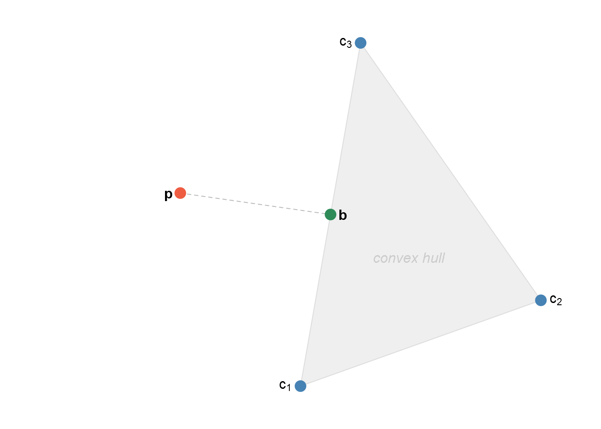
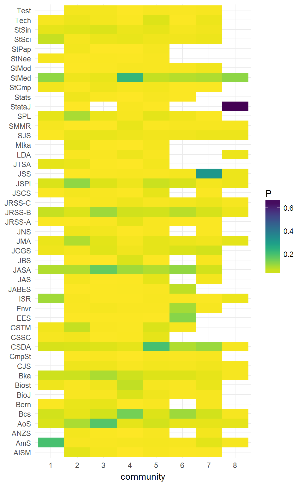
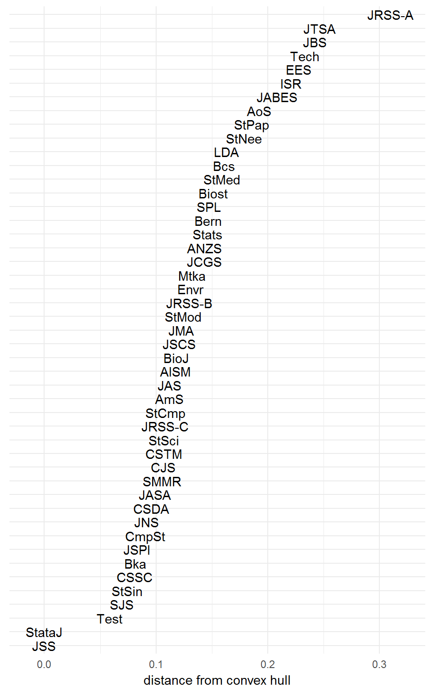
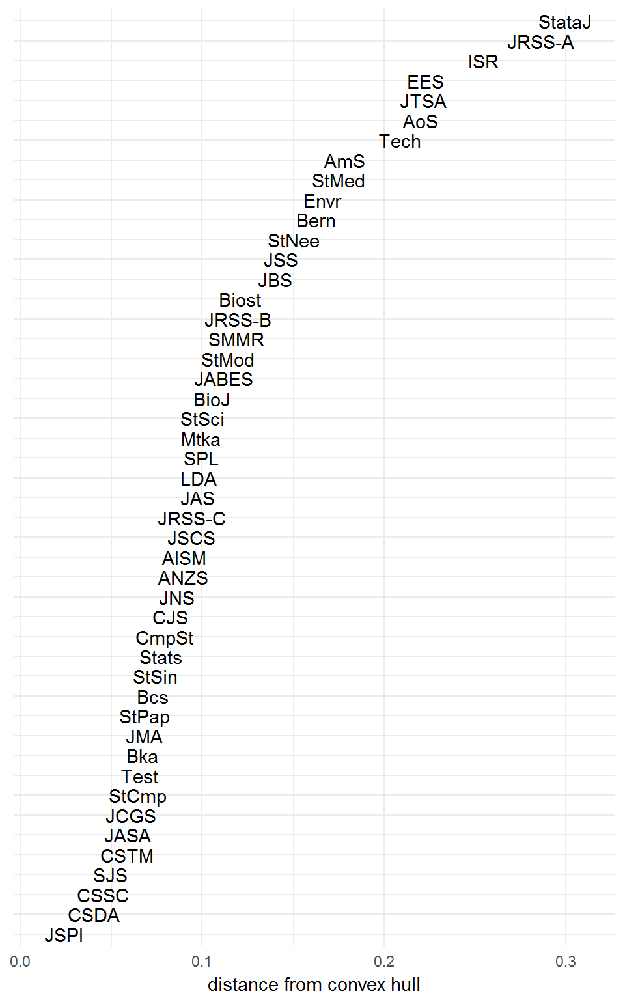
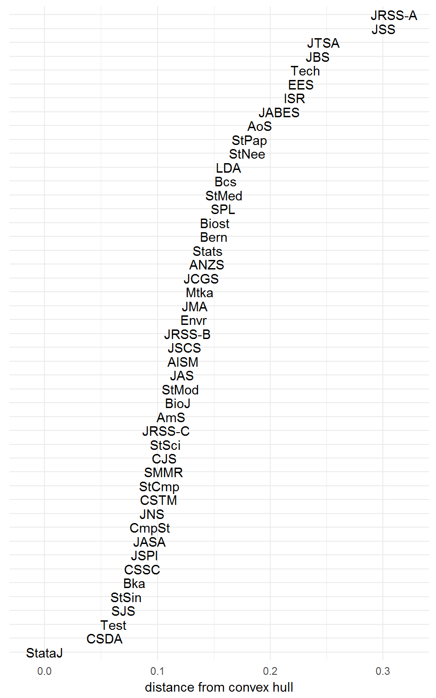

Suppose we have a citation matrix \(\mathbf{X}\), where \(x_{ij}\) is the number of citations from journal \(j\) to journal \(i\). Then the citation profile of journal \(j\) is the proportion of its references assigned to each of the other journals, given as the vector \(\mathbf{p}_j\), for \((\mathbf{p}_{j})_{i} = \frac{x_{ij}}{\sum_i x_{ij}}\).
For example, if \(\mathbf{X}\) were the following citation matrix,
library(scrooge)
X <- citations[1:6, 1:6]## AmS AISM AoS ANZS Bern BioJ
## AmS 0 1 2 0 0 0
## AISM 0 0 3 3 5 0
## AoS 9 24 0 4 53 18
## ANZS 0 5 2 0 0 0
## Bern 1 7 27 0 0 0
## BioJ 0 0 3 2 0 0then the citation profiles, arranged side-by-side as a matrix \(\mathbf{P}\), would be
P <- cprofile(X)## AmS AISM AoS ANZS Bern BioJ
## AmS 0.0 0.03 0.05 0.00 0.00 0
## AISM 0.0 0.00 0.08 0.33 0.09 0
## AoS 0.9 0.65 0.00 0.44 0.91 1
## ANZS 0.0 0.14 0.05 0.00 0.00 0
## Bern 0.1 0.19 0.73 0.00 0.00 0
## BioJ 0.0 0.00 0.08 0.22 0.00 0Every column sums to one.
colSums(P)## AmS AISM AoS ANZS Bern BioJ
## 1 1 1 1 1 1Suppose that our journals have been arranged into clusters, perhaps by a domain expert or as the output of a community detection algorithm.
The following clustering puts Annals of the Institute of Statistical Mathematics (AIMS), Australian and New Zealand Journal of Statistics (ANZS) and Bernoulli (Bern) together in one group, whilst Annals of Statistics (AoS), American Statistician (AmS) and Biometrical Journal (BioJ) each form singleton groups.
comm <- c(AmS = 1,
AIMS = 2,
AoS = 3,
ANZS = 2,
Bern = 2,
BioJ = 4)The community profiles are the average of their members’ journal profiles. In the case of communities with just one member, the community profile is the same as that journal’s profile.
C <- community_profile(X, comm)## V1 V2 V3 V4
## AmS 0.0 0.01 0.05 0
## AISM 0.0 0.08 0.08 0
## AoS 0.9 0.78 0.00 1
## ANZS 0.0 0.05 0.05 0
## Bern 0.1 0.07 0.73 0
## BioJ 0.0 0.02 0.08 0Because groups 1, 3 and 4 are singletons, their profiles are equal to the journal profiles of AmS, AoS and BioJ, respectively. Group 2’s profile is equal to the average of its member profiles, though this definition may change.
The package quadprog is designed to solve quadratic programming problems of the form \[\min\,\Bigl\{ -\mathbf{d}^\text{T} \mathbf{b} + \frac12 \mathbf{b}^\text{T} \mathbf{D} \mathbf{d} \Bigr\}\] subject to the constraints \[\mathbf{A}^\text{T} \mathbf{b} \geq \mathbf{b}_0.\]
We have the following scenario. We want to minimise the Euclidean distance between \(\mathbf{b}\), an unknown point somewhere in the convex hull of the community profiles, and \(\mathbf{p}\), a (given) journal profile that may be outside the convex hull, but somewhere within the \(k-1\) simplex, where \(k\) is the total number of journals.

Because our point lies in the convex hull of the community profiles, finding the vector \(\mathbf{b}\) is equivalent to finding a vector of weights \(\mathbf{w} \geq \mathbf{0}\) such that \(\mathbf{Cw} = \mathbf{b}\) and \(\sum w_i = 1\), where \(\mathbf{C} = \begin{pmatrix}\mathbf{c}_1 & \mathbf{c}_2 & \dots & \mathbf{c}_g\end{pmatrix}\), the matrix of \(g\) community profiles.
Hence the quadratic programme is \[ \min Q = \|\mathbf{p} - \mathbf{b}\| = \|\mathbf{p} - \mathbf{Cw}\| = \mathbf{p}^\text{T} \mathbf{p} + \mathbf{w}^\text{T} \mathbf{C}^\text{T}\mathbf{Cw} - 2 \mathbf{p}^\text{T} \mathbf{Cw}, \] subject to \[\begin{aligned} \mathbf{1}^\text{T} \mathbf{w} &= 1, \\ \mathbf{w} &\geq \mathbf{0}. \end{aligned}\]
Minimising \(Q\) is equivalent to minimising \[Q_2 = \frac12 \mathbf{w} \mathbf{C}^\text{T} \mathbf{Cw} - \mathbf{p}^\text{T} \mathbf{Cw},\] because \(\mathbf{p}\) is fixed and the factor of \(\frac12\) does not depend on \(\mathbf{b}\). This is in the standard quadratic programming syntax from above. The constraints are \[\begin{pmatrix} \mathbf{1}^\text{T} \\ \mathbb{I}_g \end{pmatrix} \mathbf{w} \mathrel{ \begin{array} {}= \\ \geq \end{array} } \begin{pmatrix} 1 \\ \mathbf{0} \end{pmatrix} \]
The function nearest_point solves this quadratic programme and returns the optimal solution and its distance.
(The optimiser actually computes \(Q_2\), then returns \(Q = Q_2 + \frac12 \mathbf{p}^\text{T}\mathbf{p}\) so that it may be interpreted correctly in the context of distance from the convex hull of community profiles.)
What convex combination of community profiles best represents the journal Annals of Statistics?
AoS_dist <- nearest_point('AoS', X, comm)## $solution
## [1] 5.950246e-17 -5.166418e-17 1.000000e+00 0.000000e+00
##
## $value
## [1] 0
##
## $unconstrained.solution
## [1] 1.160917e-13 2.260374e-14 1.000000e+00 -1.220879e-13
##
## $iterations
## [1] 2 0
##
## $Lagrangian
## [1] 0.000000e+00 0.000000e+00 0.000000e+00 0.000000e+00 1.387779e-17
##
## $iact
## [1] 5
##
## $cosine
## [1] 1From the output, the combination vector is \(\begin{pmatrix}0&0&1&0\end{pmatrix}\), and AoS’s journal profile has distance 0 from the convex hull. This should be intuitive—as a singleton community, AoS’s journal profile is a community profile.
What about another journal, say Bernoulli or ANZS?
Bern_dist <- nearest_point('Bern', X, comm)## $solution
## [1] 4.545374e-18 4.135878e-01 0.000000e+00 5.864122e-01
##
## $value
## [1] 0.004235586
##
## $unconstrained.solution
## [1] 1.1206897 1.0811359 -0.2532961 -0.9368661
##
## $iterations
## [1] 5 1
##
## $Lagrangian
## [1] 0.005259647 0.003309729 0.000000000 0.023098067 0.000000000
##
## $iact
## [1] 4 2 1
##
## $cosine
## [1] 0.9978822The combination vector for Bernoulli is \(\begin{pmatrix}0&0.41&0&0.59\end{pmatrix}\), which is 0.07 units away from the convex community hull.
ANZS has combination vector \(\begin{pmatrix}0&0.78&0.22&0\end{pmatrix}\), and is 0.42 units away from the convex community hull.
Notice how although Bernoulli and ANZS are both members of community 2, it looks like Bernoulli—if citation profile were to be used as a measure of community similarity—might actually be a better fit for community 4, along with Biometrical Journal. Recall these journals’ profiles and you see they are quite similar.
## Bern BioJ
## AmS 0.00 0
## AISM 0.09 0
## AoS 0.91 1
## ANZS 0.00 0
## Bern 0.00 0
## BioJ 0.00 0Consider the scrooge package’s built-in citations data set. This was collected by Varin et al. (2016) for their paper Statistical modelling of citation exchange between statistics journals, published in JRSS-A. It includes the citation counts between 47 statistics journals.
dim(citations)## [1] 47 47What communities might lie in this dataset? The original paper suggested hierarchical clustering of Pearson distances between symmetrised citation counts, yielding eight clusters including two singletons. We can recreate that result here.
pearson_distances <- as.dist(1 - cor(citations + t(citations), method = 'pearson'))
dendrogram <- hclust(pearson_distances, method = 'complete')
clustering <- cutree(dendrogram, h = 0.8)We can compute these eight clusters’ community profiles.
profiles47 <- community_profile(citations, clustering)
Hence we compute Euclidean distances from every journal profile to the convex hull of the community profiles.
hull_distances <- vapply(rownames(citations),
function(j)
nearest_point(j, citations, clustering)$value,
FUN.VALUE = numeric(1))
Naturally, the singletons Stata Journal and Journal of Statistical Software have distance zero to the communities hull, because they are themselves communities. The relative distances of the other journals might be interpreted as a measure of how well they are described by the clustering structure. Higher distances imply journals less well-represented by community profiles.
The sum of squared distances is 1.012 units2. On its own, this doesn’t really tell us much about the quality of our clustering.
For comparison, we can try a couple of other clustering algorithms. The Infomap algorithm (Rosvall & Bergstrom 2008) is implemented in the R package igraph.
library(igraph)
citations_graph <- graph_from_adjacency_matrix(citations, mode = 'plus')
infomap <- cluster_infomap(citations_graph, nb.trials = 1000)How does the resulting clustering compare with our hierarchical structure from earlier?
infomap_distances <- vapply(rownames(citations),
function(j)
nearest_point(j, citations, infomap)$value,
FUN.VALUE = numeric(1))
The sum of squared distances is 0.8477 units2, this time. However, the Infomap algorithm is nondeterministic and occasionally unstable, so you might obtain a different clustering and distance score every time you run it!
Try now the Louvain algorithm (Blondel et al. 2008).
louvain <- cluster_louvain(citations_graph)We get the following results.
louvain_distances <- vapply(rownames(citations),
function(j)
nearest_point(j, citations, louvain)$value,
FUN.VALUE = numeric(1))
The sum of squared distances is 1.103 units2.